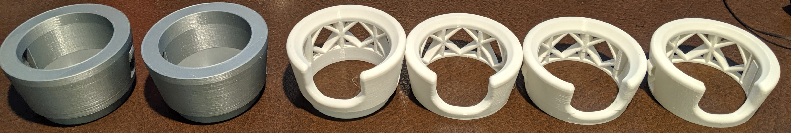
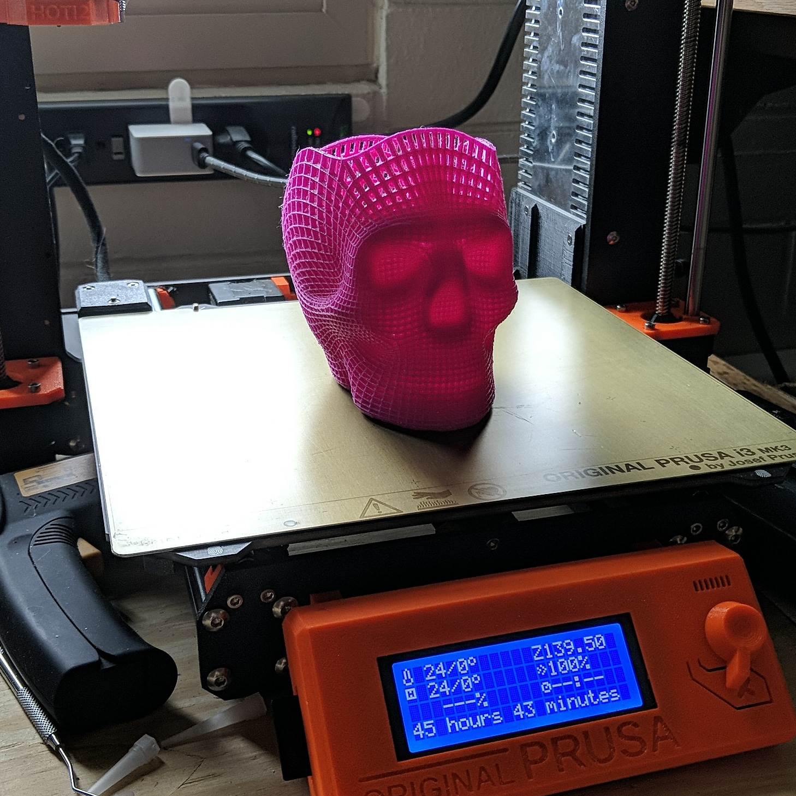

I often print functional parts for myself and the clubs/classes I'm in, this is a printed steering knuckle for test-fit on Baja car
#D-Printing allows me to practive iterative prototyping of intricate or complex parts quickly and easily.
I also print things which are just cool and don't serve any particulatly useful purpose.